Nemesys Plugin
Introduction
The Nemesys Plugin is for controlling the CETONI Nemesys syringe pumps. In the Nemesys View (figure below), operating panels are displayed for all existing and configured syringe pumps.

If the Nemesys View is not visible, then select from the main menu or click the Nemesys button in the sidebar.
Pump Operating Panel
Overview
Each operating panel is used to control, configure and visualize a Nemesys dosing module. It contains all the control elements for configuring and controlling the pump parameters and for visualizing the current status.

The panel consists of
Caption of the syringe pump
Level indicator
Control elements (depending on operating mode)
Valve switching and status
Display of the internal force sensor if supported by the device
The force sensor display is hidden by default. To show the display, select from the context menu.

Changing module names
You can assign a unique name to each dosing unit. For example, you can indicate which liquid a dosing unit doses or what it is used for. To assign a new name, simply make a left mouse click on the name of the dosing unit. You can then enter a new name, and confirm the entry with Return (Figure below).

Syringe level indicator
The fill level indicator of the syringe always shows the current position of the drive unit, and thus the current fill level of the syringe used. The colour of the syringe also indicates the current motion of the dosing unit, so you can immediately see the direction of motion of the syringe even with a very low flow rate. The following colours are possible:
|
Grey - The drive unit is currently inactive. |
Blue - The syringe piston is moving in the direction of the syringe clamp (Dispensing). |
|
|
Orange - The syringe piston is moving away from the syringe clamp (Aspirating). |


This color coding of the direction of motion is also used in all other parts of the Nemesys plugin.
Tip
The colours of the syringes help you identify the direction of motion quickly, especially with very low flow rates, because it is almost impossible to see the position of the syringe piston changing.
The thickness of the syringe in the display indicates the approximate size of the currently clamped syringe. You should be very cautious with the use of higher flow rates, especially with very large syringes, because very high pressures can develop very quickly, which could damage the device (valve) or your application.
Attention
Risk of high pressures damaging the connectors in the liquid path. To avoid high pressures causing damage, never make a reference move with a high-pressure syringe clamped.
Software limits
The travel path of a syringe is limited in the software by a minimum and a maximum value in order to prevent irreparable damage to the syringe or the piston being pulled out of the body of the syringe. These values are indicated by two red marks in the fill level indicator (Figure below), and they have to be defined for each syringe in the Syringe configuration.

Force Monitoring
Introduction to Force Monitoring
The latest pumps in the Nemesys range (Nemesys M and Nemesys S) have an internal force sensor to monitor the force with which the syringe plunger is pressed into the syringe. This serves to minimize the risk of damage to the device, the syringes and the application.
Each pump has a fixed maximum force value at which dosing stops:
Nemesys S |
0.48 kN |
Nemesys M |
1.3 kN |
In addition, the maximum force can be further limited by a user adjustable force limit.
Operating Controls
In the operating panel of the pump you will find the display of the force monitoring ❶ below the syringe display: If the display is hidden, you can show the display again via the context menu of the pump. In the context menu, select the menu item :
The protective shield symbol ❷ (see figure below) in the upper left corner of the force display indicates whether the force monitoring is active or inactive (symbol greyed out).

Dosage is only possible when force monitoring is activated. If you move the mouse arrow over the force indicator, additional information is displayed in a small window ❸:
Name of the force sensor channel (e.g. to query the sensor in the script or to use it in the logger).
Force range - the adjustable range of force monitoring
Force limit - the currently set maximum permissible force
Monitoring - indicates whether the force monitoring is active.
To limit the maximum force, right-click in the force display and select the menu item :

Then enter the desired maximum force and click OK:

What to do after a force overload stop
If the maximum set force is exceeded while the pump is in use, the pump is stopped immediately and set to a fault state. This is shown in the figure below. The value of the force sensor (green curve) has exceeded the set force limit (red line) ❶.

The error status of the pump is indicated by the red flashing LED ❷. The current measured value of the force sensor can be seen in the force display ❸. In addition, the reason for the error is shown in the event log.
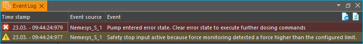
To reset the pump from this “overload” state to normal operating mode, proceed as follows:
Disable force monitoring. Click with the right mouse button in the force display and select the menu item Enable / Disable Force Monitoring. The protective shield symbol should then be greyed out.

The event log informs you that the safety stop has now been reset and that only aspiration is possible:
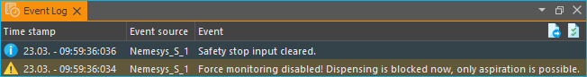Enable pump. To activate the pump, right-click on the red status LED of the pump and select the menu item Enable Pump Drive from the context menu. The status LED of the pump must then light up green.
Reduce force. You can now reduce the force by drawing up the syringe or starting a dosage with a negative flow rate. You should now see the value in the force display decrease. As soon as the force value falls below a threshold, the pump will stop and return to an error state. You should then see a corresponding message in the event log:

Activate force monitoring. Now click with the right mouse button in the force display again and select the menu item Enable / Disable Force Monitoring. The force monitoring should then be active again and the shield symbol should be coloured:

In the event log you should now see the information that the force monitoring is active again and that the safety stop has been reset.
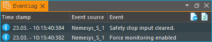Activate pump. To activate the pump, right-click on the red status LED of the pump again and select the menu item Enable Pump Drive from the context menu. The status LED of the pump must then light up green.
Now the pump is ready for operation and can be used as usual.
Reference Move
Tip
With the current Nemesys M and Nemesys S pumps, a reference move is no longer necessary and you can skip this chapter.
The drives of the dosing units are monitored and controlled by a digital positioning unit. You can make a reference move of the dosing unit to calibrate this positioning unit. A suitable time for this is, for example, when a syringe is changed, because the syringe has to be removed from the dosing unit in order to make a reference move. During the reference move, the dosing unit travels to its lower limit position, and calibrates your zero position when it reaches the limit position.
Important
Always make a reference move if you operate the pumps from another PC, because the calibration data are stored on the PC and not in the dosing units.
To start a reference move, make a right mouse click in the operating panel of the dosing unit that is to be calibrated. Select the menu item in the context menu that will open now.
Attention
Danger of damaging syringes! The system may only be calibrated when a syringe is not installed in the dosing unit.
Attention
Risk of high pressures damaging the connectors in the liquid path. To avoid high pressures causing damage, never make a reference move with a high-pressure syringe clamped.
Valve

If your dosing unit has a valve, you can switch the valve or configure the automatic valve switching in this part of the operating panel. The current switching status of the valve is indicated by the valve control element.
Tip
Move the mouse cursor over the valve to get additional information about the valve.
Manual valve switching
To switch the valve, simply make a left mouse click on the valve icon (figure below). You should hear a soft click, and the valve image should switch to the other switching status.
If you have a valve with more than two valve positions, you can cycle through all positions by clicking with the left mouse button on the valve image. If you hold down the Shift key when you click on the valve, you can cycle through the valve positions in the opposite direction:
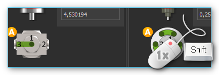
Alternatively, you can select the desired valve position directly. Click with the right mouse button on the valve, and then select the context menu item .
A small dialog window comes up, where you can choose the desired valve switching position from a valve selection box. Once you select a position, the valve is switched immediately. You can finish the selection of a valve switching position by clicking the green check mark (see figure below).
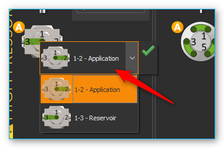
Automatic valve switching
Each pump has a valve automatic, which automatically switches the associated valve when the pump state changes. The small orange A-icon overlay shows you whether the valve automatic mode is active.

To toggle the valve automatic, just click with the right mouse button on a valve and then select the menu item .

To configure the automatic valve mode, click with the right mouse button on a valve and select the menu item . The valve automatic configuration dialog will then appear.

You can configure the target valve position for each pump state (Aspiration, Stopped and Dispensing) separately. To activate valve switching for a certain state, check the check box ❶. It is then displayed a selection box ❷ for selection of the valve position. If you want to disable valve switching for a certain state, simply uncheck the check box ❸. Finish the configuration by clicking the OK ❹ button.
Important
In certain dosing modes, such as during continuous dosing with two pumps, the valve automatic is temporarily disabled because the valves are switched by the logic of the respective operating mode.
Assigning a Valve
You can assign a valve to each syringe pump, regardless of whether the pump has its own valve or not. This valve can be e.g. a Qmix V module, an external ball valve or the valve of another syringe pump. You can do this via drag & drop. Simply drag the corresponding valve out of the valve list ❶ onto the front panel ❷ of the corresponding pump.

To assign a valve, select the menu item from the context menu of a pump.

Then select the valve from the valve list, which you want to assign.
The new valve is then displayed below the syringe. When you configure and activate the valve automatic for this valve, the valve is automatically switched when aspirating and dispensing liquid and when stopping the pump.

Important
You can only assign one single valve to a certain pump.
If you want to restore the original valve configuration later, select the context menu item .

Tip
In section Connect external valves to I/O interface you will find a detailed guide how to integrate external valve modules connected to the I/O interface (such as external ball valves) in the software.
I/O Interface
I/O Interface Overview
Various Nemesys pumps offer an I/O interface for connecting external sensors and signals, or for outputting trigger signals (example shown below).
Depending on the device configuration the I/O interface features digital inputs and outputs and/or analog inputs. All I/O channels can be found in the software window I/O Channels. If this window is not visible, you can show it by clicking the menu item in the main menu (see figure below). The channels of a pump are grouped below the corresponding pump node.
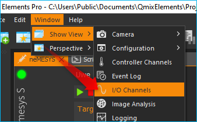
Each I/O channel has a unique name (e.g. Nemesys 1 Analog In 1), which is composed of the pump name (e.g. Nemesys 1) and the name of the channel (e.g. Analog In 1) like in the figure below.

Scaling of the analog inputs
The analog inputs of the modules measure the input voltage in the range of 0 - 5000 mV. For each channel, you can specify a separate scaling. This allows you for example to scale the voltage value of 0 - 5000 mV into a pressure value of 0 – 20 bar, if you have connected a pressure sensor. For details on configuring the channels or on scaling, read the section Configure Sensor Scaling in the I/O Plugin documentation.
In the following example, we will show you, how to connect a pressure sensor with the measuring range: 0.5 V - 4.5 V corresponds to 0 - 20 bar. The sensor is connected to analog input 1. We will now define a scaling for this pressure sensor. To do this, click with the right mouse button in the channel row if of the I/O channel view and select the menu item . The following configuration dialog is then displayed.

In this dialog, we configure the following values:
as sensor type we choose Pressure
the basic unit bar corresponds to the unit in the data sheet of our sensor
in the line Device value, enter the measuring range of the analog input: 500 mV to 4500 mV. In the Scaled value line, enter the measuring range of the sensor 0 - 20 bar.
we select a meaningful name for the channel: Presssure 1
As the display unit, we select the pressure unit psi in the Measuring unit input field.
by clicking OK we complete the configuration
The measured pressure of the sensor is now displayed in the I/O Channel window in bar (see figure below).

Tip
For a detailed description of I/O channels, configuration and scaling, see the I/O Plugin documentation.
Connect external valves to I/O interface
You can connect various external valves to the Nemesys I/O interface connector. To configure an external valve choose the context menu item .

From the list of external valves, you can now select a device you want to connect to the I/O interface. The list of Available Valves ❶ shows all valve devices that you can select. In the Valve Parameters ❷ section, you will see detailed information abpout the selected valve type.

For some valves, you may need to provide additional parameters ❸. If you are finished, confirm your selection with OK.
After selecting a valve, a dialog may appear where you need to configure whether the valve is to be a primary valve or secondary valve.
The primary valve can be connected directly to the I/O interface. If you want to connect a second additional valve, you need a Y-cable or a distribution box. Since the second valve is connected to a different digital output, you need to choose ❷ Second Valve.
If you added a valve, the new valve will appear at the end of the valve list (see figure below). Now you can switch the valve positions or assign it to a pump.

Later, if you no longer need a certain valve, you can delete it in the valve list. Click with the right mouse button on the valve list entry to open the context menu and select the menu item .
The valve is then removed from the list and if you have assigned it to a pump, then it will be removed from the control panel of the pump.
Pressure Monitoring
Caution
Dosing with Nemesys pumps can create high pressure levels, which may cause damage to syringes, the fluidic system or the application. To prevent this from happening, you should monitor the pressure in your system, manually or automatically, using pressure sensors.
Assigning Pressure Sensors
You can assign a pressure sensor to each pump. This sensor will then be displayed on the pump’s front panel and can be used for automatic pressure monitoring. The pressure sensor does not have to be electrically connected to the pump. You can use any sensor displayed in the I/O channel list (see image below).

Tip
To use any analog input as a pressure measuring input, you have to set it up beforehand. Please refer to the Qmix I/O plugin section Configure Sensor Scaling for more on the configuration of I/O channels.
To assign a pressure sensor to a pump, drag the pressure sensor from the I/O channel list and drop it on the pump’s front panel.

When you release the mouse button, the pressure sensor is added to the pump’s operating panel. The pressure sensor is now displayed in the form of a digital manometer below the syringe, or below the valve, if a valve is present (see figure below).

The display changes color depending on the pressure being measured. This gives you a quick indication of how close the pressure level is to the pressure limit.

Important
You can only assign one pressure sensor per pump.
If you want to restore the original sensor of a pump, select from the context menu on the pressure display.
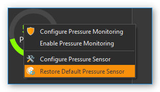Configuring the Pressure Monitoring Function
Once you’ve assigned a pressure sensor to a pump, you can set up the pressure monitoring function for that pump. When the function is active, it will continuously monitor the current system pressure and trigger certain responses, if the pressure falls below or rises above certain limits. This could include a pump stop, for example.
Please follow these steps to set up the pressure monitoring function:
Perform a right mouse click on the pressure display and select from the context menu (see image below).
The dialog window for pressure sensor configuration will be displayed (see image below).
Define a safe range by entering a lower limit and an upper limit ❷. The upper limit is limited by the maximum permissible system pressure. This maximum pressure level is dictated by the maximum rated pressure of the syringe, the valve, the pressure sensor and the maximum force provided by the drive unit.
By selecting the respective button, you can determine what you want to happen when the lower threshold is underrun (Underrun Action) ❸ or the upper threshold is exceeded (Overrun Action).
Please select the pumping direction you want the monitoring function to apply to. You can monitor filling, dosing or both. The recommended standard setting is dosing. In this setting the pump gets stopped in case of excessive pressure, while letting you ease the pressure by switching to filling.
Make sure the Monitoring enabled ❶ checkbox is checked. Otherwise the pressure monitoring function will not be active.
Accept the configuration by pressing OK ❺.
In the Overrun and Underrun Action ❸ panel, you have the following options:
Do Nothing – safe range departure is ignored. The neMESYS module continues dosing. There is no information or warning of any kind.
Warn Only – a warning message is displayed upon safe range departure. The neMESYS module continues dosing.
Stop Pump Drive – dosing is stopped upon safe range departure. In addition, a warning message is displayed.
Disable Voltage – the dosing module is stopped by cutting off the motor’s electrical power. In this case the syringe piston may be moved by the pressure in the system. In addition, a warning message is displayed. The pump must be reactivated to be able to use it again (see section Enabling a disabled pump).
Using the Pressure Monitoring Function
High pressures can quickly occur during dosing, which can damage the valve or the pressure sensor. For this reason, it is particularly important to monitor the overpressure in the dosing direction. Whether the pressure monitoring is active is indicated by the small shield symbol which is shown in the pressure display when pressure monitoring is activated (see figures below). Only if an action has been configured for the overpressure that causes the pump to stop, the shield symbol is shown in orange. If an action has been selected for overpressure monitoring that only issues a warning, the label is grayed out.
|
|
|
Pressure monitoring disabled |
Pressure monitoring enabled - Pump is not stopped in case of overpressure |
Pressure monitoring enabled - Pump is stopped in case of overpressure |


The arrows in the label indicate the pump direction for which pressure monitoring is active:
Filling monitoring |
|
|
Dosing monitoring |
|
Filling and dosing monitoring |


Tip
Once the pressure monitoring function has been configured, you can activate it or deactivate it an any time using the context menu of the pressure display (see image below).

Important
If you remove an assigned pressure sensor, for example by restoring a default pressure sensor, the pressure monitoring function will be deactivated automatically.
If you move the mouse pointer on top of the pressure display, you will get additional information regarding the pressure monitoring function as well as the maximum pressure of the sensor and the system:
Enabling a disabled pump
If a Nemesys module has been disabled by a monitoring function, the color of the LED in the pump’s control panel will change from green ❶ to red ❷.
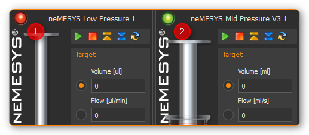
To be able to use the pump again, you have to reenable it. Perform a right mouse click on the pump’s operating panel and select from the context menu (see image below).
Syringe configuration
Introduction to Syringe configuration
The software provides user-friendly ways of configuring and managing your own syringes. The configuration and use of specific syringes in the software thus fulfil two requirements:
The software calculates all flow rates and volumes on the basis of the configured syringe.
The motion of the piston is limited by the configured syringe length and the set limits.
Opening the configuration dialog
The software constantly shows the current flow rate for each dosing unit. The program needs the parameters for each syringe in order to calculate the flow rates. You should configure these values properly each time a syringe is changed.
To do this, make a right mouse click on the axis of the image of the syringe you want to configure. Select the menu item in the appearing context menu. Then select the syringe you want to configure, as shown in Figure below. The Configure syringe dialog then opens.

Important
Please note that when a syringe is changed, the fill flow rate and empty flow rate of this dosing unit are reset to 0. This means that you have to reconfigure these values after each syringe change.
Syringe selection dialog
In this dialog, you can also select the desired syringe from a list of available syringes. The following options are available here:

The list view ❶ displays all the syringes that you have previously created. If the list contains a suitable syringe, you can select it, and close the dialog by clicking Apply Syringe. Alternatively, you can simply select a syringe by double clicking the syringe.
If the list does not contain a suitable syringe, a new syringe can be created by clicking the Create ❷ button. Clicking the Edit button opens a window to edit the syringe parameters of the currently marked syringe. You can remove a syringe from the list by clicking the Delete button. A syringe can also be removed by pressing the Delete key.
On the right you will see a preview image ❸ of the currently selected syringe and all syringe parameters
The selection can be completed at any time by clicking Apply Syringe ❹ or cancelled by clicking Cancel.
List of available syringes
The list of available syringes shows all available syringes in tabular form. It contains both the standard syringes defined by CETONI and the syringes created by the user. The icon in the first column indicates whether the syringe is a standard syringe or a user-specific syringe:
Predefined standard syringe from CETONI |
|
|
Syringe created by user |

{kind=link}
{kind=link}
{kind=link}
{kind=link}
Important
Predefined syringes can not be edited or deleted.
You will find the following columns in the syringe list:
Name - Unique syringe name. Syringes with the same name are not allowed.
Material - Steel or glass – the syringe display is adjusted accordingly
Max. Pressure (bar) - Maximum syringe pressure – important for pressure monitoring
Suited for pump- Shows for which pump a syringe is suited. If this field is empty, it is a syringe that was created by the user.
Tip
If you click in the header of a column, the syringe list is sorted according to this column. This is indicated by a small arrow above the column title. By clicking again in the same column header, you can reverse the sorting.

To search for a specific syringe in the list, simply right-click on a cell in the column you want to search. Usually this will be the Name column. From the context menu that is then displayed, choose .
A search field is displayed in which you can enter your search text ❶.
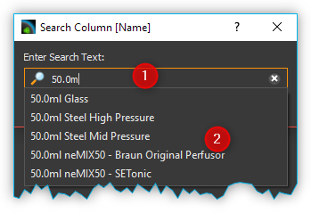While typing, a list of possible hits is displayed ❷. As soon as there is a matching entry, select it with the cursor keys or click on the entry with the mouse. The search dialog will be closed and in the list of syringes the found syringe will be highlighted in color.
Configuring the syringe parameters
If you click the Create or Edit button, the Syringe Configuration Wizard for configuring the syringe parameters opens.
Please configure a syringe with the following steps:
First assign a unique name to the syringe in the field Unique syringe name ❶ (Figure below). If you have selected a syringe for editing and only change its name, you can generate a copy of the selected syringe. Then select the syringe material ❷. Click Next to go to the next step.
You should now configure the inner diameter of the syringe. The inner diameter of the syringe is required in order to calculate flow rates and dose quantities. If you do not know the inner diameter, you can alternatively define the inner diameter via the Scale length in mm, and the volume it contains via Scale volume in μl. The software then uses these values to calculate the inner diameter of the syringe. In this step, select how you want to configure the inner diameter of the syringe. (Figure below). Depending on the selection, you continue the configuration with point (3) or (4). Click Next to go to the next step.
You configure the inner diameter of the syringe by entering the scale length and volume within this scale length. (Figure below). To do this, measure, the scale with a suitable measuring instrument (calliper gauge), and read the volume shown on the inscription on the scale. Then click Next to go to the next step, and read further at point (5).
You configure the inner diameter of the syringe by measuring it with a calliper gauge. Then enter the value in the Inner Syringe Diameter field, and click Next to go to the next step.
Now configure the piston stroke Piston Stroke of the syringe (Figure below). The piston stroke is the maximum length through which the piston can be moved in the syringe without it leaking and liquid emerging. It is advisable to use the length of the scale on the syringe as the maximum piston stroke.
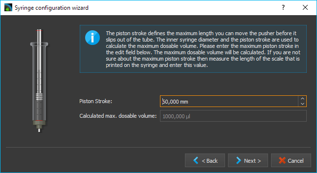
If syringes of different lengths are used in a multi-syringe holder, the syringe with the shortest piston stroke limits the range of travel of the drive. When you have entered the piston stroke, the software uses this and the inner diameter to calculate the maximum dosable volume.
In this step you can define the limits for the maximum and minimum syringe fill levels. (Figure below). In this way, you can limit the range of travel of the piston by two additional software limits. You can enter these parameters optionally in microlitres or millimetres. You should use these values to limit the range of travel, for example when using a syringe stirrer. If you enter the value in one unit (e.g. millimetres), the value in the other unit (e.g. microlitres) is calculated by the software.
The syringe preview on the left-hand side always shows you the current configuration of the syringe. The width of the syringe changes when the inner diameter changes. The length of the syringe changes when the maximum piston stroke is changed, and the two red marks on the syringe indicate the two additional limits. The syringe is subsequently also shown corresponding to this preview in the software.
- Finally enter the maximum pressure the syringe can be used with.
This value is the maximum value you can use for pressure monitoring. (see section Pressure Monitoring).
Close the configuration of the syringe parameters by clicking the Finish button. You can cancel the configuration at any time by pressing the Cancel button. You can always return to the previous configuration step with the Back button.
Configuration of SI units
When dosing liquid flows, the main parameters are the flow rates used and the quantities of liquid to be dosed or already dosed. For optimal adaptation to the particular application, the user can configure the SI units individually for displaying the flow rates and volumes for each individual dosing unit. To show the SI-dialog, click with the right mouse button in the control panel of the pump to display the context menu.
Then click the menu item to configure the SI unit of volume or click the menu item , to configure the SI unit of flow rates. A SI-unit selection dialog window appears.

Set the desired SI unit, and close the dialog by clicking OK.
Direct Control
Direct Control Overview
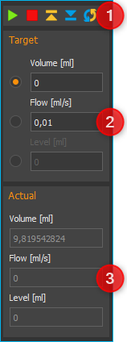Use the direct control for interactive control of the dosing units. In this way, you dose precisely defined quantities of liquid with defined flow rates or generate constant liquid flows.
The direct control also displays the current flow rate, the dosed volume and the fill level of the syringe. If you use a high-pressure module, the current pressure measured by the pressure sensor is also displayed.
Following controls and indicators are available:
Toolbar
Target values of the dosing module
Actual values of the dosing module
Toolbar
The toolbar includes buttons for starting dosing processes. The following buttons are available:
|
Start the dosing with set target values |
Stop dosing |
|
|
Aspirate reagent - Move dosing unit to maximum position |
|
Empty syringe - Move dosing unit to minimum position |
|
Configure the continuous flow |
{kind=link}
Attention
Danger of damaging the syringe during emptying! When the syringe is emptied, according to the configuration, the dosing unit is moved toward the lower limit position at high speed.
Target value
Selecting dosing mode

You define the type of dosing with the selection buttons on the on the left-hand side.
The following options are available:
Volume - Select this mode to dose a specific volume at a defined flow rate
Flow - In this mode, you generate a constant flow of liquid. The dosing continues until a limit position is reached or until you stop the dosing process.
Syringe Level - In this mode, you can define a specific fill level for the syringe which is to be reached at a defined flow rate.
Setting flow rate and volume
Use the Volume, Flow and Syringe Level input fields in order to enter the flow rate, the flow volume or the syringe level. Setting the set-points does not start the drives or change the current flow rate. The new values are not transferred to the dosing unit until a dosing process is started by pressing the Start button in the toolbar.
Volume dosing
If you want to dose a specific volume, you have to enter the volume to be dosed and the flow rate. The volume is entered relative to the current position of the syringe piston. This means that you enter a negative volume to aspirate reagent and a positive volume to dispense reagent. In this operating mode, the flow rate is always a positive value, and defines the flow rate of the aspiration/dispensing of reagent.
Constant flow rate
In order to generate a constant flow of liquid, only the flow rate has to be defined, and the volume input field is disabled for entries. In this operating mode, the flow rate can be either positive or negative. A negative value indicates reagent aspiration, and a positive value reagent dispensing.
Setting syringe level
You can achieve a precisely defined syringe fill level by entering the values for the syringe fill level and the flow rate. The syringe fill level must be a positive value lying between the minimum and maximum values of the syringe fill level. (see section Syringe configuration). In this operating mode, the flow rate is always a positive value, and defines the flow rate of the aspiration/dispensing of reagent.
Attention
Danger of damaging the valve or connections in the liquid path High flow rates can cause high pressures to develop very quickly, which can damage the valve, connections in the liquid path or your application.
Important
For dosing very low flow rates, select syringes with small inner diameters in order to ensure pulsation-free dosing.
Actual Values
The current values reported by the device are shown in the Actual Values area.
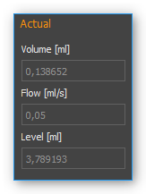The Flow field shows the current flow rate in the dosing unit. The Volume field shows the volume that has been pumped since the last time the dosing unit was started. If the drive is stopped and restarted, the actual value of the pumped volume is reset to 0. The Syringe Level field shows the current fill level of the dosing unit in the configured SI volume unit.
Synchronous pump start / stop
In the main toolbar, you will find two buttons for simultaneously start / stop multiple pump modules.


When you click the Sync Start button ❶, a selection dialog appears in which you select the pumps that you want to start at the same time (see figure below).

Set a checkmark for each pump you want to start. Dosage starts as soon as you klick the OK button.
Important
Before starting, you need to configure the dosing parameters (volume, flow) of all selected pumps in the control panel of each pump.
Before the software starts the dosage, it checks the configured parameters of all selected pumps. If the software found invalid parameters (eg flow or volume values of 0), the synchronous start is not performed. In the application Event Log you will get information about the problems encountered.


When you click the Stop All button ❷, all pumps are stopped immediately.
Continuous Flow
Introduction to Continuous Flow
In continuous flow mode you can pair two pumps together using the software, in order to create a continuous flow over a long period of time through alternating fluid take-up and discharge. In this case one of the pumps doses at a particular flow rate, while the other pump takes up reagent from the reservoir. Once the dosing pump has emptied the syringe, the software automatically switches to the second dosing unit with a full syringe and continues dosing with that pump. This creates a continuous, uninterrupted flow, which lets you dose at a constant flow rate for a nearly unlimited period of time.
Operating and Display Elements
You can recognize a dosing unit that was configured for continuous flow by the activated continuous flow icon in the direct control window (see image).

The continuous flow mode is terminated automatically, as soon as you change the syringe configuration of one of the connected dosing units. In this case you have to reconfigure all parameters. If continuous flow has been activated for one of the dosing units, the operating panel will indicate “continuous flow” in its status display (see image below).

The following display elements will then be visible:
Remaining time – shows the remaining time for continuous dosing. When this display reaches zero, continuous flow is stopped automatically.
Accumulated volume [ml] – the accumulated discharged volume shows the total volume discharged by both pumps into the application.
Linked pump – the linked pump is the second pump paired to this pump for the purpose of achieving continuous flow.
Configuring Continuous Flow
You will need at least two Nemesys dosing units to achieve continuous flow. Both units should have a valve. To configure continuous flow perform a right mouse click on the operating panel of the direct controller and select from the context menu (see image below).

A configuration dialog will appear. The dosing unit you click on for configuring continuous flow is the first of the dosing units to be paired. If continuous flow has not been configured for this dosing unit, you can also open the configuration dialog by pressing the Continuous Flow button in the direct control window (see image below).

If you see the following configuration page after calling up the dialog (see image below), the previously set configuration was loaded successfully and all you have to do is click the Finish button to accept the configuration.

If you want to change certain parameters of the loaded configuration, click on the Next button to browse the individual pages of the configuration assistant.
Selecting the second Dosing Unit

On this page of the configuration dialog you can select the second continuous flow unit from a list of available dosing units. If no configuration has been loaded, this will be the first page of the configuration assistant. Select the dosing unit of your choice by clicking the relevant name in the list. Then click on Next to continue the configuration.
Important
For continuous flow you should always select two dosing units that are immediately connected and displayed next to each other in the software.
Selecting a Continuous Flow Mode

You can choose from the following continuous flow modes:
Pressure Controlled Switching - yields the best results without changing pressure or flow rate when switching units. However, you will need a pressure sensor on each pump.
Cross-Flow- provides a soft transition and a constant flow rate when switching from one dosing unit to the other. This mode is most suitable if your application uses a low system pressure and you don’t have pressure sensors.
The individual modes will be explained in detail in the following subsections. Perform a left mouse click on the mode you wish to configure and then click on Next to continue.
Configuring 3x2-way Valves
During continuous flow operation the respective valves get switched for both pumps. In the Configure 3x2-way Valves window (see image below) you can configure the valves and valve positions for your 3x2-way valves.
Tip
If you have already assigned valves to your pumps, these valves are automatically selected here.

First, select the valve type you wish to use ❶. If you use 3x2-way valves and have selected Pressure-Controlled Switching, you will need additional shut-off valves. If you use 3x3-way valves with an additional closed position, you will not require additional shut-off valves for pressure-controlled switching.
Use the selection box ❷ to select the valve you want to switch. Using the two selection boxes below ❸, select the positions you want the valve to switch to when filling and dosing. If you have a 3x3-way valve with an additional closed position, you also need to configure the closed position.
Configuring Shut-off Valves
If you have selected pressure-controlled switching and your 3x2-way valves do not have a closed position, you will need to configure your shut-off valves in this next step. As in the valve dialog above, please select the valves and configure the closed ❶ and open ❷ valve position.

Configuring Pressure Sensors
If you have selected pressure-controlled switching, you need to configure the pressure sensors for both pumps in this next step (see image below).
Tip
If you have already assigned pressure sensors image10 to your pumps that are displayed on the front panel, these sensors are automatically selected here, and you can proceed immediately by clicking Next >.
Pressure-controlled Switching
Introduction to pressure-controlled switching
In pressure-controlled switching the pressure of the filling pump is adapted to the pressure of the dosing pump prior to switching, through the use of valves and pressure sensors. In addition, during the switching process the flow of both pumps is cross-faded (cross-flow). This prevents the occurrence of a switching impulse, while pressure and flow rate stay nearly constant.
Since a certain period of time is needed to fill and cross-fade the pump, in order to build and reduce pressure and to switch the valves, the achievable flow rate in continuous mode is lower than the maximum flow rate of each of the individual pumps involved.
In the configuration window for pressure-controlled switching you can set all parameters and you can adjust the pressure controller of each pump for the current configuration and the desired application pressure.

In the upper part of the window ❶ you find the tuning parameters. In the lower part of the window ❷ you will find a diagram, which shows the controller’s target value (white) and the measured pressure value (in color) during adjustment. Using this graphic representation you can get an idea of the pressure controller’s operational status and detect issues like excessive oscillation.
Caution
Very high pressure may occur during tuning. If necessary, you should activate pressure monitoring, in order to stop the pump when certain pressure values are exceeded.
Tuning Parameter Overview
The continuous mode uses a dedicated pressure controller for each pump to regulate the target pressure in the filling pump before switching to the application. The proportional gain of the controller depends on many factors, such as pressure, tightness, tube length and the fluid being used. This value must be re-calibrated or retuned for each setup. The tuning section uses the following operating elements:

Pressure Display – depending on the dosing direction (filling/discharge) the pressure display is colored in orange or blue.
Tuning Pressure – this is where you set the pressure to which the pressure controller will be tuned. Set the anticipated application pressure you will use for dosing into your application.
Proportional Gain – this field shows you the proportional gain of the pressure controller. If you click the button with the lamp symbol, the system will suggest a proportional gain for the target pressure you set. This value can be used as a starting point for tuning.
Pressure Window – Defines a symmetrical range of accepted pressure values relative to the target pressure. This means that only if the pressure is within this window for the duration of the Pressure Window Time it will be considered stable. A value that is too high may cause the controller to overshoot, a value that is too low may cause long times for the target pressure to settle, or may cause the target pressure never to be reached. The value that should be set depends on the target pressure and the quality of the pressure sensors used. The pressure window must always be greater than the fluctuations of the pressure sensor, otherwise the pressure will never be considered stable.
Pressure Window Time– The time the pressure must be within the Pressure Window for it to be considered stable by the software.
Reservoir Pressure – Set the pressure that exists in the reservoir from which the syringe is filled. The pressure is lowered to this pressure before the valve to the reservoir is opened to fill the syringe.
Status Display – the status display gives you information regarding the current status of the pressure controller or the calibration. You should only go to the next step if you see a green checkmark here or if a previous tuning has been loaded.
Restore Default Settings – pushing this button restores the standard tuning parameters.
Tuning the Pressure Controller
A pump’s pressure controller should be tuned at the approximate piston position at which the switching to the other pump takes place. If you use two identical pumps, this usually happens when the syringe is almost completely filled. To make sure that the syringe can still be filled further for pressure building, the piston should not be in the rearmost position. As a rule of thumb the syringe should be filled to about 90%.
Please follow the steps below to tune the pressure controller.
First, enter the desired tuning pressure ❷. This should be approximately equal to the application pressure at the desired flow rate. You can determine the tuning pressure ahead of time by dosing into your application at the desired flow rate.
Now select the starting value for the proportional gain ❹ of the controller. If you click on the button with the lamp symbol, the system will suggest a starting value for the selected pressure.
Start the tuning process by clicking the Start Tuning button. The software will now start tuning the controller automatically. For safety reasons tuning will begin at 50% tuning pressure, to avoid damage due to pressure overshooting. The system tunes the controller in such way as to arrive at the target pressure quickly with a minimum of overshoot.

If achieving the target pressure takes a long time (10 seconds or more – see image below), you can interrupt the tuning process and increase the proportional gain manually (by doubling it, for example).

If the controller overshoots a lot, you can interrupt the tuning process and decrease the proportional gain manually (by halving it, for example). Restart the tuning process with the new values.
Tip
After a successful tuning, change the value for the target window (Pressure Window) and start another tuning run. You will get a feeling for how Pressure Window value affects controller tuning.
During tuning the controller’s proportional gain is adjusted automatically. If you just want to manually test the current control parameters without the automatic adjustment, simply start a parameter test by clicking on Test Parameters.

During the parameter test the pump cycles between a non-pressurized state of 0 bar and the set tuning pressure. This lets you visually check and evaluate the current control parameters using the diagram.
Perform a right mouse-click on the diagram to open the context menu with additional diagram functions.
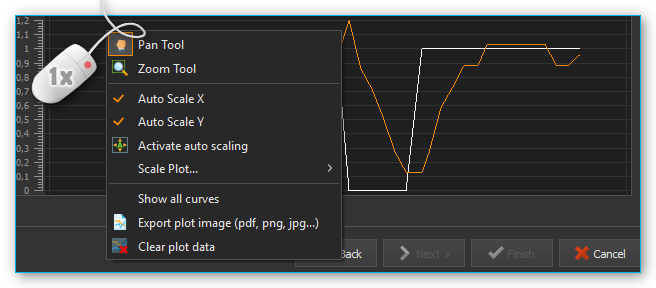Setting Parameters
After tuning both pumps, go to the next page to set further parameters for pressure controlled switching.

In the Refill Flow field ❶, set the flow rate used to fill the syringe. The larger you select this value, the higher the maximum flow rate that can be realized for continuous dosing. This means that you should always select the filling flow rate as high as possible or as high as your application allows. If the filling flow rate is too high, air bubbles may form.
The Timing slider ❷ lets you control the timing of continuous flow operation. During tuning, the volume and time periods needed for pressurizing the filling pump are determined. These time values are multiplied by a certain factor to create a safety margin. This buffer is used to compensate for delays during pressure building, which can be caused by issues or variations in the system. You can use the slider to select a higher margin (Robust Timing) or a lower margin (Tight Timing).

Using a larger buffer decreases the flow rates that can be achieved in comparison to a smaller buffer. In the same way, a smaller buffer increases the risk of disrupting the continuous flow timing in case of system issues or variations, possibly leading to flow instabilities. Double-clicking on the slider sets the standard value we recommend, unless you absolutely need a higher or lower flow rate.
Important
A small safety buffer for the timing increases the risk that the timing of the continuous flow is disturbed and the continuous flow is interrupted if the application pressure fluctuates or if other disturbances occur.
In the field Maximum feasible flow (ml/s) ❸ you can see the maximum flow rate that can be achieved with the set parameters. The coloured bar shows how far away this flow rate is from the maximum flow rate that you can achieve in normal pump operation mode. This allows you to quickly see how the refill flow rate and timing affect the realizable flow rate.
Once you have set all parameters, continue the configuration with section Set flow rate and duration of continuous flow.
Configuring Cross-Flow

In the Refill Flow field ❶, set the flow rate used to fill the syringe. By pressing the Min and Max buttons. The larger you select this value, the higher the maximum flow rate that can be realized for continuous dosing. This means that you should always select the filling flow rate as high as possible or as high as your application allows. If the filling flow rate is too high, air bubbles may form. This flow rate is always slightly higher than the rate indicated in the Maximum feasible flow (ml/s) field ❹, since the syringes must be filled more quickly in order to be ready for the next dosing run when the syringes are switched.
Cross-flow makes it possible to cross-fade the flows of the dosing modules. This is done by configuring the Cross-flow Duration ❷.
In the field Maximum feasible flow (ml/s) ❹ you can see the maximum flow rate that can be achieved with the set parameters. The coloured bar shows how far away this flow rate is from the maximum flow rate that you can achieve in normal pump operation mode. This allows you to quickly see how the refill flow rate and timing affect the realizable flow rate.
The following image shows the cross-fading of flows from two individual pumps.
The Cross-Flow-Duration tcross expresses the period of time needed for cross-fading one dosing module to the other. The smaller this value, the steeper the flow rate curve and the less time is required for the cross-flow operation to be completed.
Cross-flow offers you a simple way of compensating for pressure drops during switching. The Overlap Time tov ❸ governs the period of time by which the flow curves of both dosing modules overlap. The larger the tov value, the longer both dosing modules keep dosing simultaneously (see image above).
Set flow rate and duration of continuous flow
In this window (figure below) you set the flow rate at which the continuous flow is started ❶ and the duration of dosing ❷. If you don’t want to limit the duration, simply leave the setting at Dose unlimited. With this setting continuous flow is maintained until you stop the dosing process manually.

The software offers you three ways of limiting the duration of continuous flow:
Dose volume – continuous flow is stopped as soon as a defined dosing volume has been reached.
Dose for – continuous flow ends after a predetermined duration of time.
Dose until – continuous flow ends at a specific time in the future.
Starting/Stopping Continuous Flow
After the configuration you can start continuous flow operation by a left mouse-click on the Start Dosing button in the direct controller window.
You can interrupt continuous flow operation at any time by clicking the Stop Dosing button.
If you stop a dosing unit involved in continuous flow operation, you also stop the other dosing unit tied into the system. If you have configured a particular duration for continuous flow operation, stopping a dosing unit will also interrupt the preset duration, meaning that when you restart the dosing unit, continuous flow operation will resume for the time remaining at the point of interruption. If you configured a target volume for continuous flow operation, the system will resume dosing the remaining volume at the time of interruption, upon restart.
Cancel/Restart Continuous Flow
Once the preset time for continuous flow operation has elapsed or the target volume has been reached, continuous flow operation is terminated and both dosing units are stopped. Performing a left click on the Start ❶ button lets you restart continuous flow operation. In this case the duration or target volume will be reset to their starting values. Left clicking on the Continuous Flow ❷ button terminates continuous flow mode and stops the continuous flow operation in progress. In this case re-starting will not be possible (see image below).

Change flow rate in continuous flow
You can change the flow rate during a dosing run in all operating modes. To achieve this enter the desired flow rate into the Flow field ❶ and confirm by clicking on Start ❷ with the left mouse button (see image below).

The dosing module accepts the change in flow rate, while retaining all other dosing parameters, such as volume or continuous flow parameters. When you configure continuous flow operation you will be shown the maximum dosing flow rate achievable with the currently set refill rate and the other continuous flow parameters, for guidance (see image below).
Nemesys Script Functions
Introduction to Nemesys Script Functions
The Nemesys plugin offers a number of script functions which can be used to program automatic sequences. The following script functions are available:
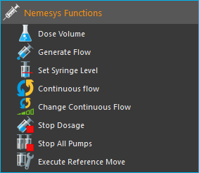Automatically stop pumps at script stop
If you want all pumps to be stopped immediately when the user stops the running script program, activate the corresponding button in the main toolbar.

Dose Volume

With this function, you can dose a specific volume at a precisely defined flow rate. In the selection field Dosing Module ❶ you select the dosing module you want to use for dosing. Alternatively, you can also enter the name of a script variable in the field, which contains a device reference of a pump.

All other parameters, such as the volume to be dosed and the flow rate, can be set in the Target Values ❷ area.
You can also activate or deactivate the Run to completion ❸ parameter in the configuration area. When Run to completion is activated, the script execution is not continued until the complete volume has been dosed and the dosing process has ended. If this parameter is not active, the dosing is started, and then the next script function is executed immediately. This enables you, for example, to start a number of dosing modules almost simultaneously.
Tip
All the dosing functions support the use of variables. That means, in all input fields marked with a coloured V in the script configuration panel (e.g. flow rate and volume) you can enter variables.
Generate Flow

This function is used to generate a constant flow rate. In the configuration area, you can select the dosing module and set the flow rate. If the Run to completion parameter is active, the next script function is not executed until the module has stopped or reached one of the limit positions. The configuration of the parameters corresponds to the Dose Volume function.
Tip
You can use script variables with device references in the pump drop-down box.
Set Syringe Level

You can use this function in a script if you want to reach a specific syringe fill level. The dosing module then doses until the target fill level is reached. You can set the dosing module, the fill level and the flow rate in the configuration area of this function. The configuration of the parameters corresponds to the Dose Volume function.
Continuous Flow Function

This function allows you to start a continuous flow of two pumps from a script. To do this, select the first dosing unit ❶ in the script configuration area of this function and then start the Continuous Flow Wizard ❷ to configure all parameters. For a detailed description of the configuration, refer to the Configuring Continuous Flow section.
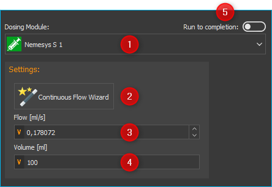After configuration with the Continuous Flow Wizard, you will see the configured flow rate in the Flow field ❸. If you have configured a certain volume for the continuous flow in the wizard, the Volume field ❹ is also displayed. You can use the Flow and Volume fields to set the flow rate and volume using script variables.
With the checkbox Run to completion ❺ you define when the next script function will be executed. If no check mark is set here, the continuous flow is started and the next script function is executed immediately. If Run to completion is active, the script is only continued when the abort condition configured in the wizard occurs - i.e. when the configured volume has been dosed or the set time has elapsed.
Change Continuous Flow
{kind=link}
With this function you can start a previously configured continuous flow or change an already running continuous flow. To execute this function without errors, you must either have previously configured a continuous flow for two pumps or have executed the Continuous Flow Function script function.

In the configuration area, select the pump ❶ whose continuous flow you want to change. In the Flow field ❷ enter the flow rate. The unit corresponds to the unit configured in the Continuous Flow Wizard when configuring the continuous flow.
Tip
You can use script variables to set the flow rate.
Stop Dosage
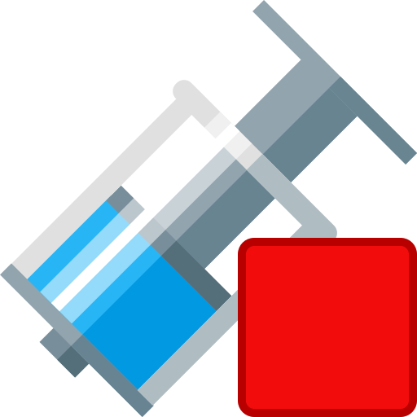{kind=link}
You can stop an active dosing process of a module with this function.
Tip
You can use script variables with device references in the pump drop-down box.
Stop All Pumps
Stops the dosing of all pumps simultaneously.
Execute Reference Move
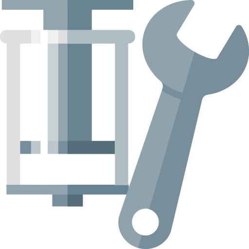{kind=link}
This function allows you to start a reference move from the script. With the parameter Run To Completion you can specify whether the function is terminated after starting the reference move or after completion of reference move.